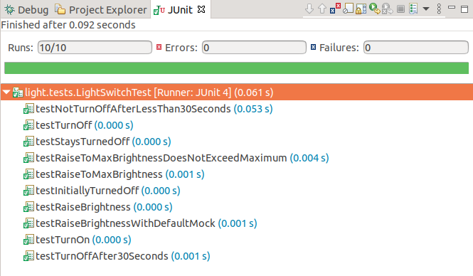

Java Code Generation for SCTUnit with JUnit and Mockito
This example demonstrates how to generate JUnit tests using Mockito from SCTUnit tests and how to set everything up. The test program can be executed and integrated in your build process easily.
Example application
The example application and SCTUnit test is based on the previous example Testing State Machines with SCTUnit.

Setup Projects Properties
For running JUnit tests with Mockito the library Mockito is required. The project has already been configured. However, if you want to create your own projects executing tests, you need to add the mockito libraries manually and configure the build path.

Test Code Generation
Code generation for Java code has already shown step by step in the previous example Java Code Generation. This example contains a code generator java.sgen file for generating the state machine code, which is required. Additionally to that, the tests folder contains a code generator file for the SCTUnit file: java_test.sgen. The generator ID for this example is sctunit::java. You can right click the generator file and generate the code artifacts. This will generate the test class, which can be executed as JUnit test.
Test execution
After generating the code, the project can be executed as JUnit test.
